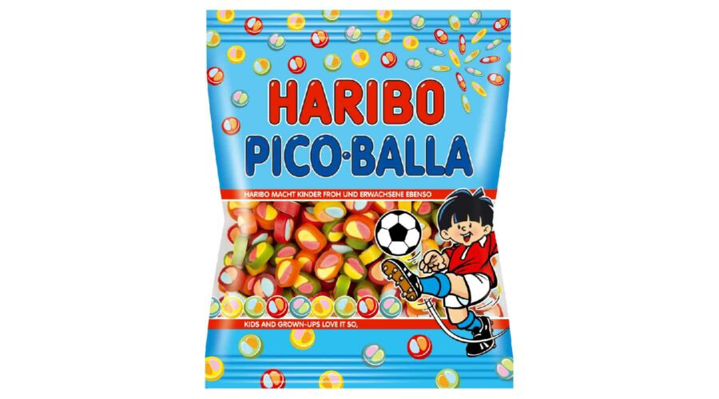
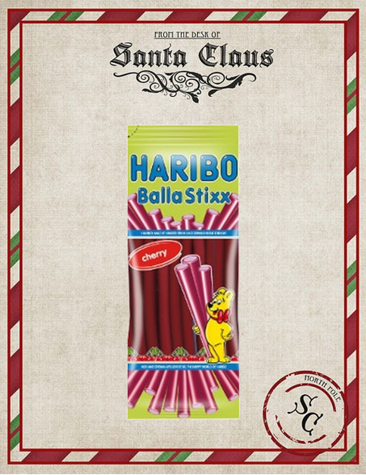
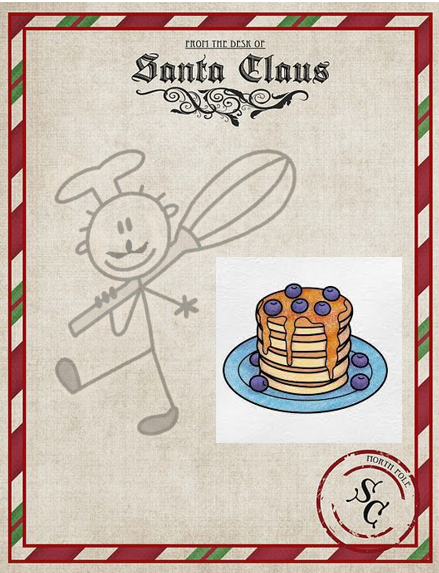

Weboldal a télapónak!
Eszter kedvenc nasiai:
(ugye nem kell egészségesnek lennie?)
-
Gumicukrok(még nem találtam olyan gumicukrot amúgy, ami ne izlene)


-
Palacsinta, amit a "Télapó" süt: nincs róla képem, mert a snapchat eltűntette :(

-
Dörmi maci
-
Rettentően szeretem a marcipánt.